Windows Server 2025
Amazon EC2上でWindows Server 2025 Baseを初期構築し、接続、ローカルユーザー、OS、AWS管理機能の設定手順をまとめる
再起動を伴うコンピューター名変更とWindows Updateを最後に実施し、設定後の確認方法を整理する
AMIの違い
AMIについては、BaseがデスクトップGUI付き、CoreがGUIを含まないServer Core。今回のcompmgmt.mscによる手順ではBaseを選択する。CoreはPowerShell、SConfig、Windows Admin Centerなどによる管理向け
| AMI | 画面と管理方法 |
|---|---|
BaseWindows_Server-2025-English-Full-Base | デスクトップエクスペリエンスを含み、通常のWindows GUI、サーバーマネージャー、MMC、リモートデスクトップを利用できる |
CoreWindows_Server-2025-English-Core-Base | 標準のデスクトップGUIを含まないServer Core。PowerShell、SConfig、Windows Admin Center、RSATなどで管理する |
出典：Microsoft公式: Server Coreとデスクトップエクスペリエンスの違い
PowerShell実行例
| 手順番号+見出し | 実行するコマンド |
|---|---|
| 2.1 管理用ローカルユーザー |
powershell powershell powershell |
| 2.2 利用者用ローカルユーザー |
powershell powershell powershell |
| 3.1 ファイル名拡張子の表示 | powershell |
| 3.2 タイムゾーン設定 | powershell |
| 3.3 Windows Updateの自動ダウンロードとインストール通知 | powershell |
| 3.4.1 RDPセッション制限 | powershell |
| 3.4.2 RDP暗号化レベル | powershell |
| 3.5 Windows Defender Firewallの無効化 | powershell |
| 3.6 追加ボリュームの初期化 | powershell |
| 5.1 コンピューター名設定 | powershell |
| 5.2 Windows Update | powershell |
| 5.3 最終再起動 | powershell |
0. 起動時の確認
0.1 AMIとキーペア
AWSが提供するWindows Server 2025 AMIを選択し、秘密鍵を安全に管理できるRSAキーペアを指定する
Amazon EC2のWindowsインスタンスはED25519キーペアに対応していません。Administratorの初期パスワードを復号できるよう、Windows ServerではRSAキーペアを使用する
0.2 構築値
| 値 | 用途 |
|---|---|
<WINDOWS_PRIVATE_IP> | RDP接続先のプライベートIPアドレス |
<KEY_PAIR_NAME> | Administrator初期パスワードの復号に使用するRSAキーペア |
<HOSTNAME> | Windows Serverへ設定するコンピューター名 |
<ADMIN_USER> | 管理用ローカルユーザー名 |
<CUSTOMER_USER> | 利用者用ローカルユーザー名 |
<DESCRIPTION> | ローカルユーザーの用途を示す説明 |
<DISK_NUMBER> | 初期化する追加ディスクの番号 |
<VOLUME_DRIVE_LETTER> | 追加ボリュームへ割り当てるドライブ文字。例: D: |
<VOLUME_LABEL> | 追加ボリュームへ設定するラベル |
0.3 Windows Server 2025の既定値差分
| 機能 | Windows Server 2025での確認点 |
|---|---|
| TLS 1.0 / 1.1 | Windows Server 2025では既定で無効。新規AMIではレジストリを追加変更せず、アップグレード環境や明示的な上書きがある場合だけ確認 |
| Credential Guard | 要件を満たすドメイン参加済みの非ドメインコントローラーでは既定で有効。ワークグループ環境や要件を満たさない環境では状態を個別確認 |
| OpenSSH Server | コンポーネントが既定でインストール済み。使用する場合だけサービス起動と通信許可を設定 |
| SMB署名 | 送信SMB接続で署名が既定必須。旧NASや古いSMB実装との互換性を確認 |
| SMB認証レート制限 | SMBサーバーで既定有効。不正な認証試行の間隔を設け、総当たり攻撃を抑制 |
| SMBファイアウォール | 新しい共有ルールではNetBIOSポート137から139を既定で含めない |
| RRAS | 新規構成ではPPTPとL2TPを既定で受け付けない。IKEv2またはSSTPを優先 |
| WinGet | コマンドラインパッケージ管理ツールが標準搭載 |
出典：Microsoft公式: Windows Server 2025の新機能
出典：Microsoft公式: Windows Serverで削除または非推奨となった機能
1. Windowsインスタンス接続
1.1 Administratorパスワード取得
- Amazon EC2コンソールで対象インスタンスを選択
アクション＞セキュリティ＞Windowsパスワードを取得を選択- 起動時に指定したRSAキーペアの秘密鍵をアップロード
パスワードを復号化を選択- 表示されたAdministratorパスワードを認証情報管理ルールに従って保管
アクション ＞ セキュリティ ＞ Windowsパスワードを取得の順に選択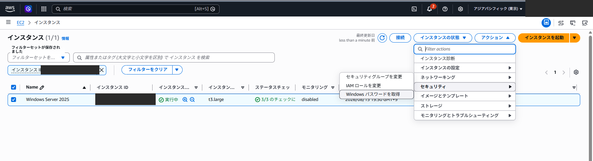
パスワードを復号化を選択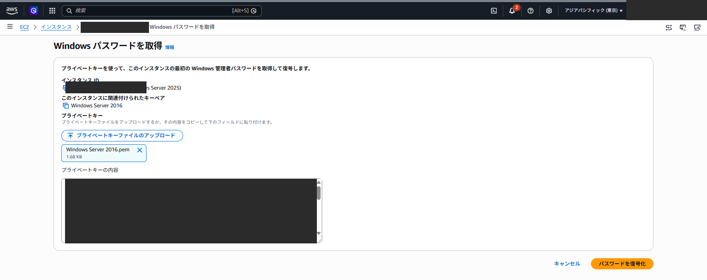
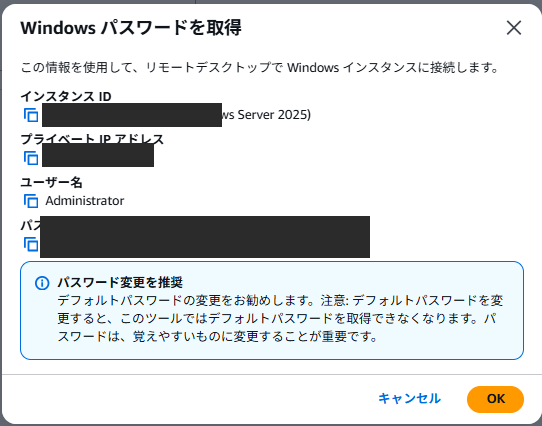
1.2 踏み台経由のRDP接続
- 踏み台サーバーへSSH接続
- SSHクライアントでローカルポートフォワードを設定
ローカルポートへ未使用の任意ポートを指定。例:65001転送先へ<WINDOWS_PRIVATE_IP>:3389を指定- リモートデスクトップクライアントで
127.0.0.1:65001へ接続 Administratorと復号したパスワードでサインイン
1.3 Fleet Manager Remote Desktop接続
- AWS Systems ManagerのFleet Managerで対象のマネージドノードを選択
ノードアクション＞リモートデスクトップで接続を選択- ユーザー認証情報を使用する接続方式を選択
Administratorと復号したパスワードで接続
Fleet Managerを利用するEC2インスタンスには、SSM AgentとAmazonSSMManagedInstanceCore相当の権限を持つIAMインスタンスプロファイルが必要です。インスタンスへアクセスキーを保存せず、IAMロールで権限を付与する
2. ローカルユーザー作成
2.1 管理用ローカルユーザー
- Windows + Rを押し、
compmgmt.mscを実行 ローカル ユーザーとグループ＞ユーザーを開く- メニューバーの
操作(A)＞新しいユーザー(N)を選択 ユーザー名へ<ADMIN_USER>を入力- パスワード運用要件に合わせて初回変更と有効期限を設定
作成(E)を選択- ユーザー一覧で作成したユーザーをダブルクリック
所属するグループタブを選択し、追加(D)を選択選択するオブジェクト名を入力してくださいへAdministratorsを入力名前の確認(C)を選択し、名前が解決されたことを確認してOKを選択- 所属するグループに
Administratorsが追加されたことを確認
コンピューターの管理でローカル ユーザーとグループ ＞ ユーザーを開き、メニューバーの操作(A) ＞ 新しいユーザー(N)を選択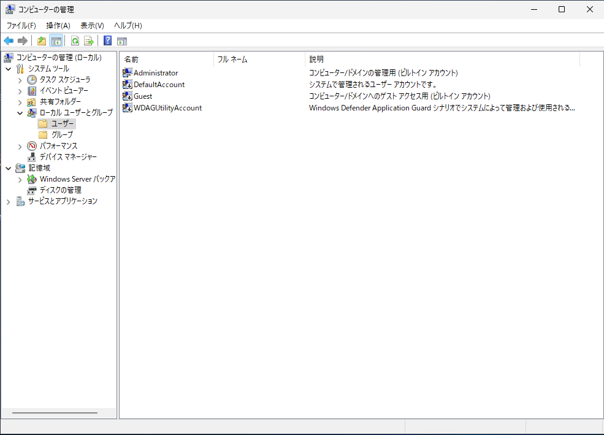
作成(E)を選択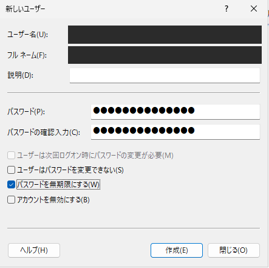
所属するグループタブ ＞ 追加(D)を選択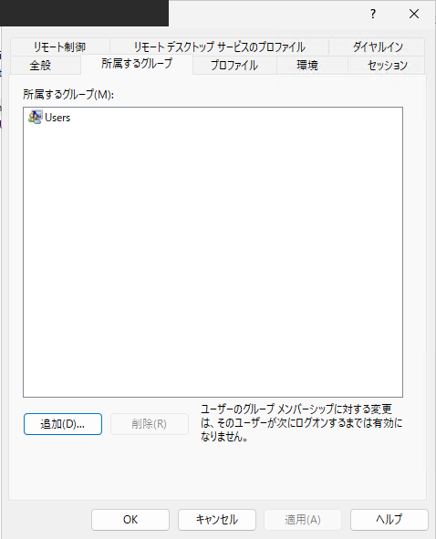
Administratorsを入力して名前の確認(C)を選択し、名前が解決されたことを確認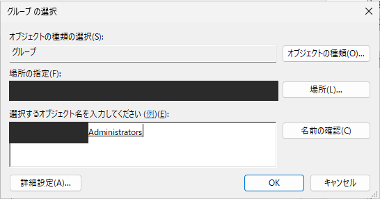
AdministratorsとUsersが表示されることを確認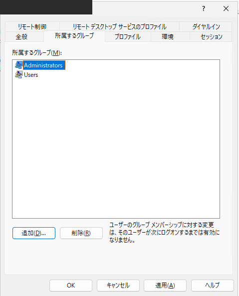
2.2 利用者用ローカルユーザー
管理者権限でPowerShellを起動し、パスワードを対話入力で受け取り、パスワードとアカウントの有効期限を無期限にしたローカルユーザーを作成してAdministratorsグループへ追加する
$Password = Read-Host -AsSecureString "パスワードを入力"New-LocalUser -Name "<CUSTOMER_USER>" -Password $Password -PasswordNeverExpires -AccountNeverExpires -Description "<DESCRIPTION>"Add-LocalGroupMember -Group "Administrators" -Member "<CUSTOMER_USER>"3. Windows OS初期設定
3.1 ファイル名拡張子の表示
- エクスプローラーを開く
表示＞表示を開くファイル名拡張子を有効化
実行ファイルや設定ファイルの種類を誤認しないよう、拡張子を常に表示する
3.2 タイムゾーン設定
- Windows + Rを押し、
timedate.cplを実行 タイムゾーンの変更を選択(UTC+09:00) 大阪、札幌、東京を選択
日付と時刻 ＞ タイムゾーンの変更(Z)を選択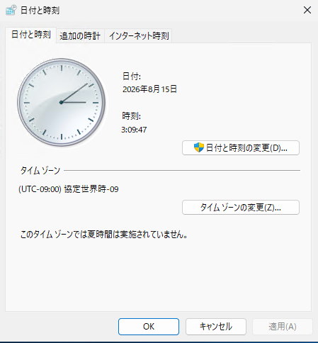
タイムゾーンへ(UTC+09:00) 大阪、札幌、東京を指定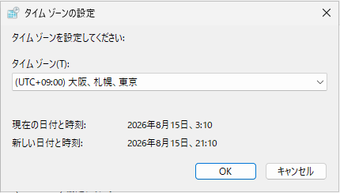
3.3 Windows Updateの自動ダウンロードとインストール通知
計画したメンテナンスウィンドウで更新を実施する運用に合わせ、更新プログラムを自動ダウンロードし、インストールの前に通知する
- Windows + Rを押し、
gpedit.mscを実行 コンピューターの構成＞管理用テンプレート＞Windowsコンポーネント＞Windows Update＞エンド ユーザー エクスペリエンスの管理の順に開く自動更新を構成するを開く有効を選択自動更新の構成へ3 - 自動ダウンロードしインストールを通知を指定して保存
エンド ユーザー エクスペリエンスの管理 ＞ 自動更新を構成するを開く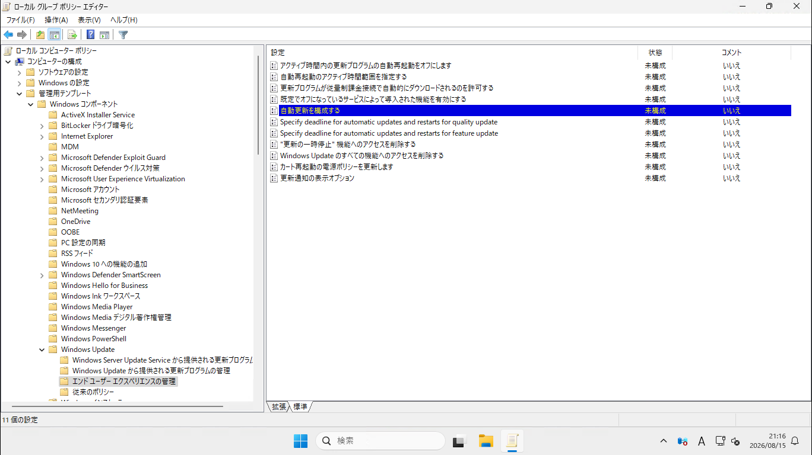
有効にし、3 - 自動ダウンロードしインストールを通知を指定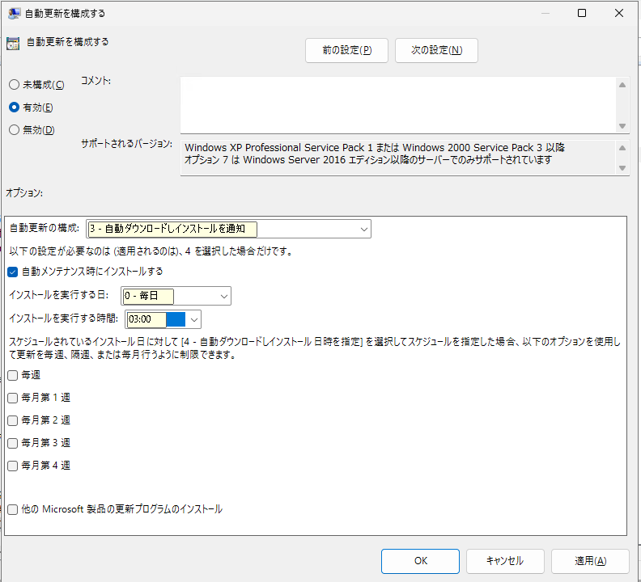
この設定では更新プログラムが自動適用されません。AWS Systems Manager Patch Manager、WSUS、SCCMなどで定期的に更新を適用する運用を必ず用意し、既知の脆弱性を残さないようにする
3.4 RDPセキュリティ設定
3.4.1 RDPセッション制限
- Windows + Rを押し、
gpedit.mscを実行 管理用テンプレート＞Windowsコンポーネント＞リモート デスクトップ サービス＞リモート デスクトップ セッション ホスト＞接続の順に開く接続数を制限するを開き、接続数の上限を設けない場合は無効を選択- 複数セッションが必要な場合のみ、
リモート デスクトップ サービス ユーザーに対してリモート デスクトップ サービス セッションを1つに制限するを無効化
リモート デスクトップ セッション ホスト ＞ 接続 ＞ 接続数を制限するを開く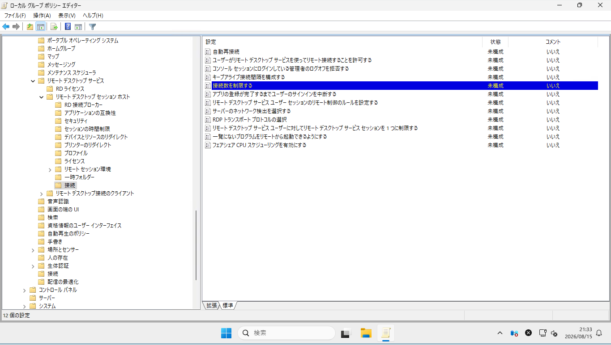
無効を選択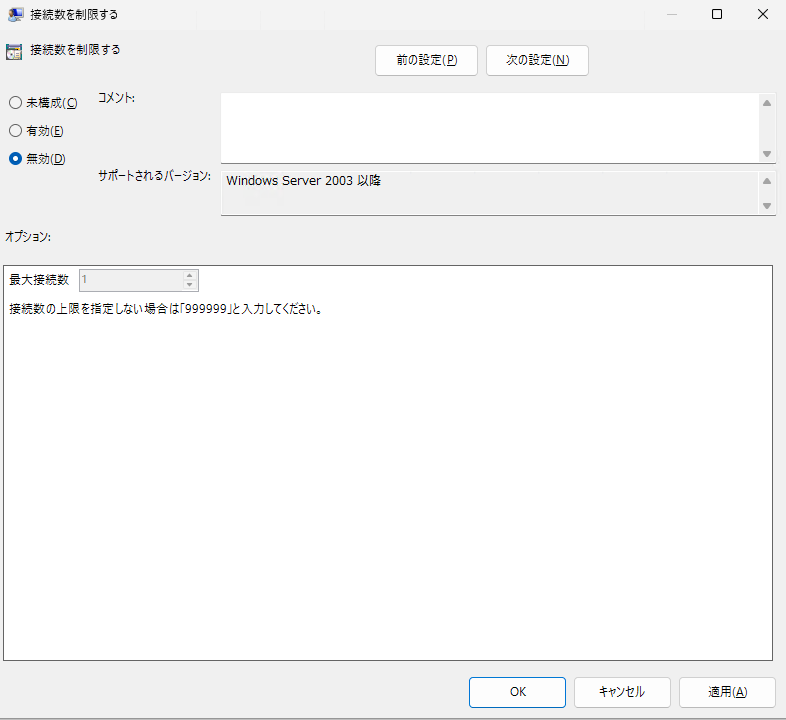
3.4.2 RDP暗号化レベル
RDPのネイティブ暗号化を利用する接続に対して、クライアントとサーバー間の暗号化レベルを高へ固定する
- Windows + Rを押し、
gpedit.mscを実行 コンピューターの構成＞管理用テンプレート＞Windowsコンポーネントの順に展開リモート デスクトップ サービス＞リモート デスクトップ セッション ホスト＞セキュリティの順に展開クライアント接続の暗号化レベルを設定するを開く有効を選択し、暗号化レベルへ高を指定gpupdate /forceを実行
リモート デスクトップ セッション ホスト ＞ セキュリティ ＞ クライアント接続の暗号化レベルを設定するを開く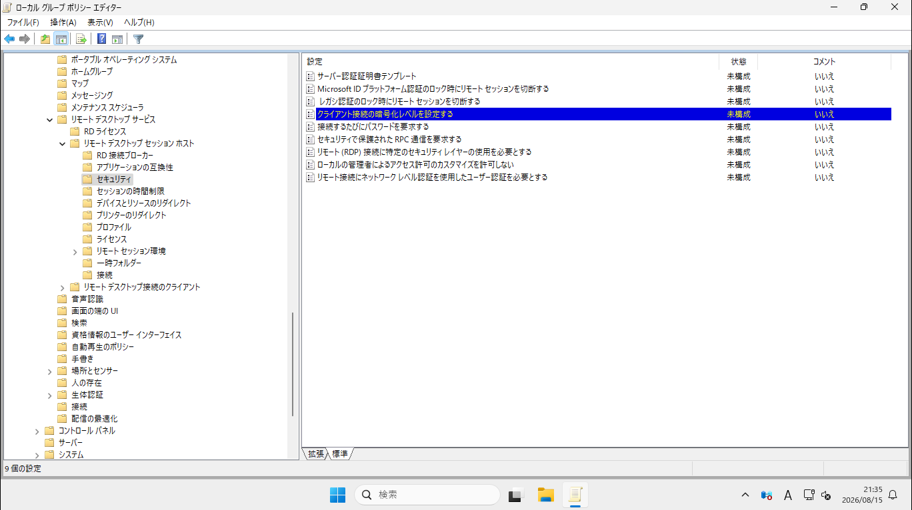
有効にし、暗号化レベルへ高レベルを指定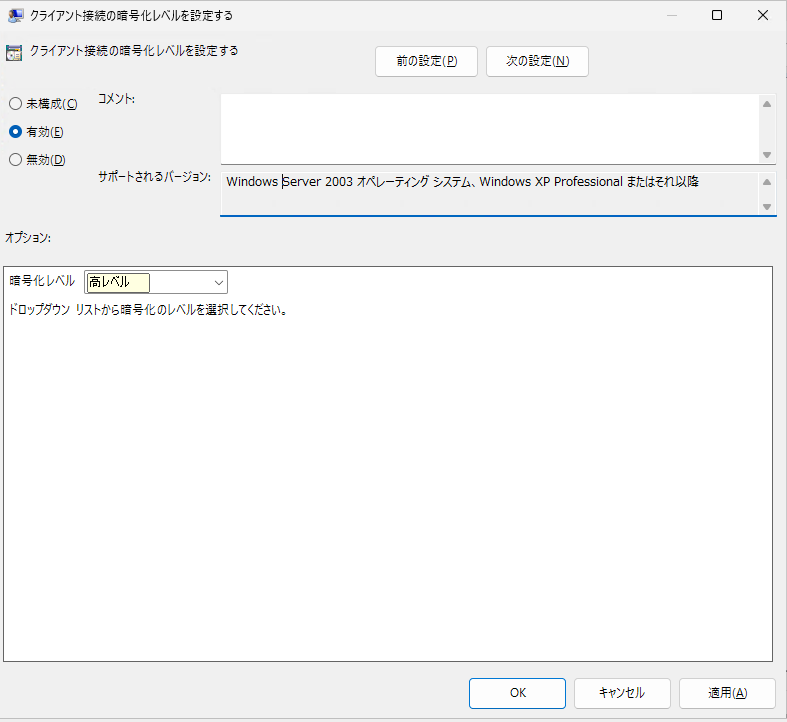
高はRDPのネイティブ暗号化へ128ビット暗号化を要求する設定です。TLSをセキュリティレイヤーとして使用する接続では、証明書とTLS設定を優先して設計します。FIPS準拠設定は互換性へ影響するため、準拠要件がある場合だけ別途検証する
出典：Microsoft公式: Remote Desktop Servicesポリシー
3.5 Windows Defender Firewallの無効化
本手順の対象環境では、通信制御をSecurity Groupなどの上位レイヤーへ集約し、OS側との二重管理による設定差分や疎通障害を避ける社内標準に基づいてWindows Defender Firewallを無効化する
- Windows + Rを押し、
wf.mscを実行 Windows Defender ファイアウォールのプロパティを開く- ドメイン、プライベート、パブリックの各プロファイルで
ファイアウォールの状態を無効に変更 - 設定を保存
Windows Defender ファイアウォールのプロパティを開く前に、ドメイン、プライベート、パブリックの各プロファイルが有効であることを確認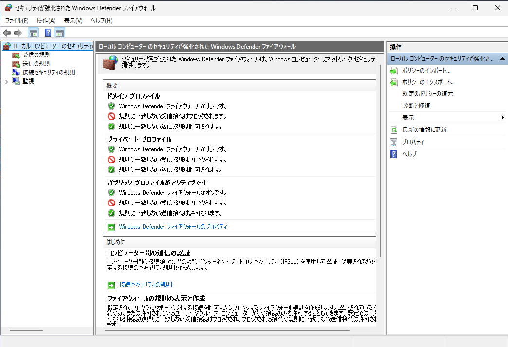
ファイアウォールの状態を無効に変更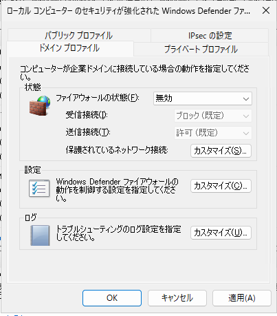
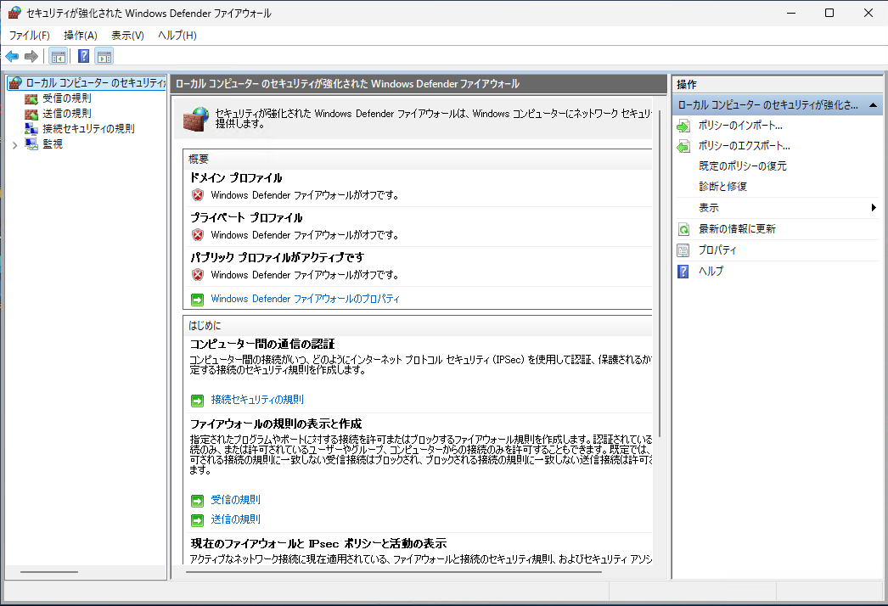
Windows Defender Firewallの無効化は、すべての環境に適用する一般的なAWS推奨ではありません。AWSはOS側ファイアウォールを多層防御として利用することを推奨しています。本手順は、Security GroupとNetwork ACLによる通信制御、EDRによる検知・防御、変更承認が整備された対象環境に限って適用する
3.6 追加ボリュームの初期化
- Windows + Rを押し、
diskmgmt.mscを実行 - 未初期化ディスクの容量とディスク番号を確認
パーティションスタイルへGPTを選択- 未割り当て領域から
新しいシンプル ボリュームを選択 ドライブ文字へ<VOLUME_DRIVE_LETTER>を割り当てファイルシステムへNTFSを選択し、要件に合わせたボリュームラベルを設定- クイックフォーマットを実行
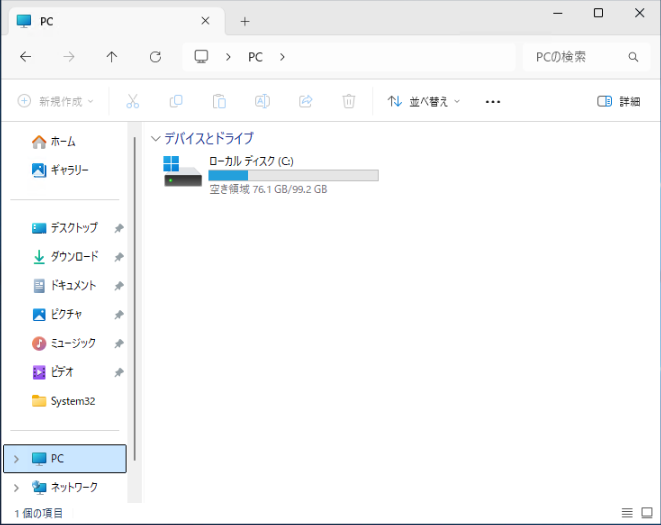
GPTを指定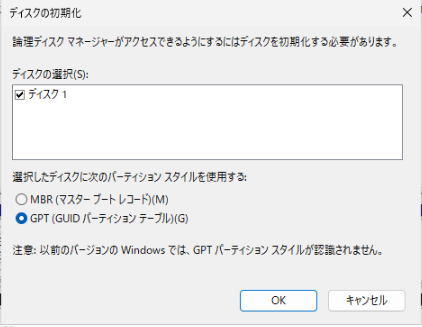
新しいシンプル ボリュームを選択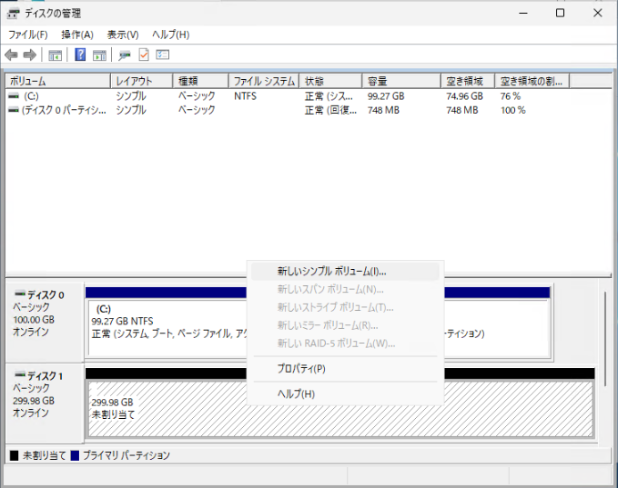
新しいシンプル ボリューム ウィザード ＞ 次へを選択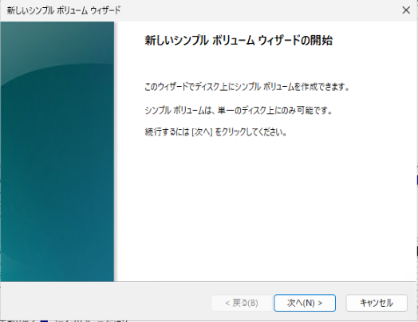
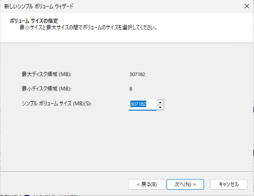
ドライブ文字へ<VOLUME_DRIVE_LETTER>を割り当て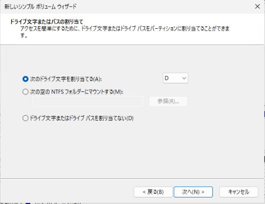
NTFSを指定し、ボリュームラベルとクイックフォーマットを設定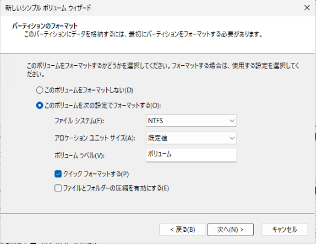
完了を選択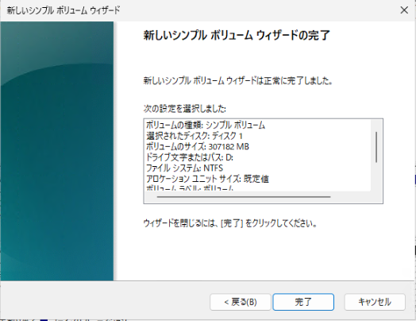
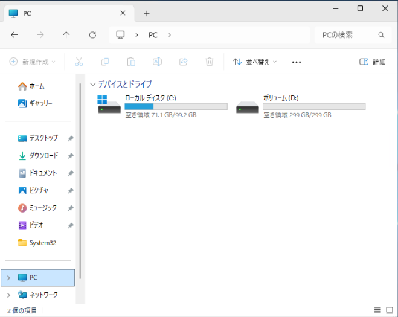
4. AWS管理機能の設定
4.1 CloudWatch Agent導入
AWS Systems Manager Run Commandを使用して、Amazon CloudWatch Agentをインストールします。インストールだけではメトリクスやログは収集されないため、後続手順で設定ファイルを作成して適用する
- AWS Systems Managerコンソールで
Run Commandを開く コマンドドキュメントへAWS-ConfigureAWSPackageを選択ActionへInstall、NameへAmazonCloudWatchAgentを指定- 対象インスタンスをタグまたはインスタンスIDで指定
- コマンドを実行
EC2インスタンスのIAMロールには、Systems Manager管理用のAmazonSSMManagedInstanceCoreと、メトリクス・ログ送信用のCloudWatchAgentServerPolicy相当の権限を付与します。設定ファイルにアクセスキーやシークレットアクセスキーを保存しない
出典：AWS公式: CloudWatch Agentのインストール
4.2 CloudWatch Agent設定ファイル作成
収集するWindowsイベントログ、パフォーマンスカウンター、収集間隔、CloudWatch Logsのロググループ名をJSON形式の設定ファイルへ定義する
| 分類 | 設定例 | 設計時の確認事項 |
|---|---|---|
| Windowsイベントログ | System、Application | 収集するイベントレベル、保持期間、機密情報の有無 |
| Windowsセキュリティログ | Security | 監査要件がある場合のみ追加し、ログ量と閲覧権限を確認 |
| CPU | Processor(_Total)\% Processor Time | 収集間隔とアラームしきい値 |
| メモリ | Memory\% Committed Bytes In Use | OS標準メトリクスでは取得できないため、Agentで収集 |
| ディスク | LogicalDisk(*)\% Free Space | 一時ドライブや不要なボリュームを対象外にするか確認 |
4.2.1 Windows上のウィザードで作成
単体サーバーで設定内容を確認しながら作成する場合は、管理者権限のPowerShellから設定ウィザードを実行する
Set-Location "$Env:ProgramFiles\Amazon\AmazonCloudWatchAgent"
.\amazon-cloudwatch-agent-config-wizard.exeOSへWindows、実行環境へEC2を指定- 収集間隔とパフォーマンスカウンターを選択
- 収集するWindowsイベントログ、イベントレベル、ロググループ名を指定
- ローカル利用の場合は、生成された
config.jsonを確認 - Parameter Storeで集中管理する場合は、保存確認へ
Yesを選択し、パラメータ名とリージョンを指定
ローカルのconfig.jsonを使用する場合は、次のコマンドで設定を読み込み、Agentを起動する
& "$Env:ProgramFiles\Amazon\AmazonCloudWatchAgent\amazon-cloudwatch-agent-ctl.ps1" `
-a fetch-config -m ec2 -s `
-c "file:$Env:ProgramFiles\Amazon\AmazonCloudWatchAgent\config.json"4.2.2 Parameter Storeへ保存
複数台へ同じ設定を配布する場合は、承認済みのJSONファイルをAWS Systems Manager Parameter Storeへ保存します。AWS管理ポリシーのCloudWatchAgentServerPolicyを利用する場合は、AmazonCloudWatch-WindowsServer2025のようにAmazonCloudWatch-で始まるパラメータ名を指定する
aws ssm put-parameter `
--name "<CLOUDWATCH_AGENT_CONFIG_PARAMETER>" `
--type "String" `
--value file://cloudwatch-agent.json `
--overwriteParameter Storeへ設定を登録する作業者にはssm:PutParameter権限が必要です。EC2インスタンスにはssm:GetParameterだけを許可し、設定登録権限は付与しません。AmazonCloudWatch-以外のパラメータ名を使う場合は、対象パラメータに限定したssm:GetParameter権限をインスタンスロールへ追加します。Parameter Storeはアカウントおよびリージョン単位で管理されるため、適用先と同じリージョンへ登録する
4.3 Run Commandによる設定適用
Parameter Storeに保存した設定を、AWS Systems Manager Run Commandから対象インスタンスへ適用する
- AWS Systems Managerコンソールで
Run Commandを開く コマンドドキュメントへAmazonCloudWatch-ManageAgentを選択Actionへconfigureを指定Modeへec2を指定Optional Configuration Sourceへssmを指定Optional Configuration Locationへ<CLOUDWATCH_AGENT_CONFIG_PARAMETER>を指定Optional Restartへyesを指定- 対象インスタンスをタグまたはインスタンスIDで指定し、コマンドを実行
- コマンド出力が成功していることを確認し、CloudWatchのメトリクスとロググループへデータが到着していることを確認
共通設定をParameter Storeで管理すると、インスタンスへJSONファイルを個別配布せずに同じ設定を再適用できます。設定変更時はJSONをレビューし、Parameter Storeを更新してから対象タグ単位でRun Commandを実行する
5. 再起動を伴う最終作業
ここまでの再起動を伴わない設定と動作確認を完了してから、コンピューター名とWindows Updateを設定し、最後に再起動をまとめて実施する
5.1 コンピューター名設定
- Windows + Rを押し、
sysdm.cplを実行 コンピューター名タブ ＞変更を選択コンピューター名へ<HOSTNAME>を入力- ドメイン参加が必要な場合は、名前解決と接続先Directory Serviceを確認して設定
- 再起動要求を確認し、この時点では再起動せず手順5.3まで保留
コンピューター名タブ ＞ 変更(C)を選択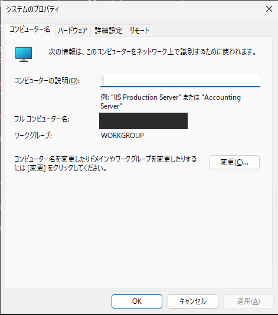
コンピューター名へ<HOSTNAME>を入力し、OKを選択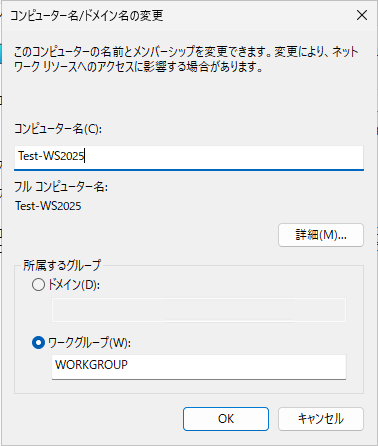
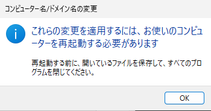
5.2 Windows Update
- Windows + Rを押し、
ms-settings:windowsupdateを実行 更新プログラムのチェックを選択- 検出された更新プログラムをダウンロードしてインストール
- 再起動要求を確認し、手順5.3へ進む
すべてダウンロードしてインストールを選択し、検出された更新プログラムを適用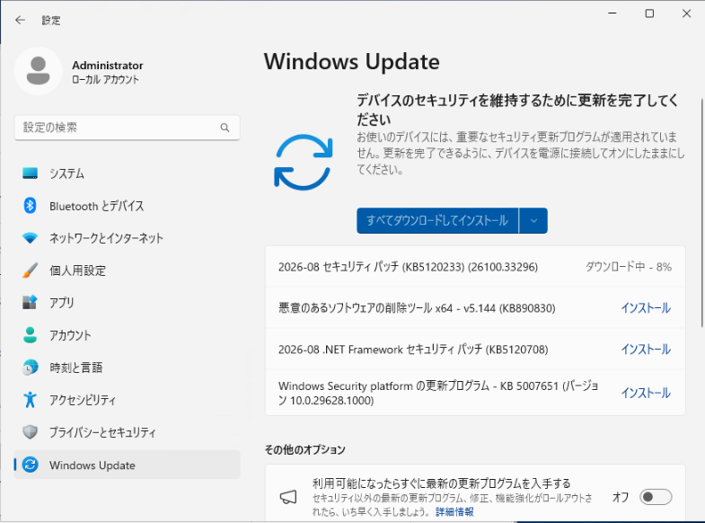
5.3 最終再起動と確認
- 業務影響、接続中の利用者、実行中ジョブがないことを確認
- 管理者権限のPowerShellで
Restart-Computer -Forceを実行 - 再接続後、コンピューター名、RDP接続、監視、業務通信を確認
- Windows Updateを再確認し、更新プログラムが残っている場合はインストールと再起動を繰り返す
- 更新プログラムが検出されず、各動作確認が完了したことを記録